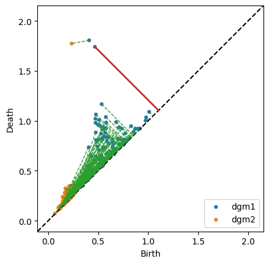

2.3.2.1. Computing Wasserstein and Bottleneck Distances
[5]:
from ripser import ripser
from teaspoon.MakeData.PointCloud import Torus, Annulus
import numpy as np
from teaspoon.TDA.Distance import wassersteinDist, bottleneckDist
numPts = 500
seed = 0
# Generate Torus
t = Torus(N=numPts,seed = seed)
# Generate Annulus
a = Annulus(N=numPts,seed = seed)
# Compute persistence diagrams
PD1 = ripser(t,2)['dgms'][1]
PD2 = ripser(a,1)['dgms'][1]
[6]:
wassersteinDist(PD1,PD2,p=2,q=2)
[6]:
1.8922819954736267
[7]:
bottleneckDist(PD1, PD2, matching = True, plot = True)
[7]:
(0.6366934925317764,
array([[ 0.00000000e+00, -1.00000000e+00, 4.00471091e-02],
[ 1.00000000e+00, -1.00000000e+00, 2.71813273e-02],
[ 2.00000000e+00, -1.00000000e+00, 1.37364864e-02],
[ 3.00000000e+00, 1.00000000e+00, 6.25133872e-01],
[ 4.00000000e+00, 4.00000000e+00, 6.24991775e-01],
[ 5.00000000e+00, 1.20000000e+01, 6.10377252e-01],
[ 6.00000000e+00, 2.40000000e+01, 6.14972815e-01],
[ 7.00000000e+00, 6.00000000e+00, 5.94342589e-01],
[ 8.00000000e+00, 2.30000000e+01, 5.70441499e-01],
[ 9.00000000e+00, 6.40000000e+01, 6.22471675e-01],
[ 1.00000000e+01, 3.70000000e+01, 5.74341476e-01],
[ 1.10000000e+01, 2.10000000e+01, 5.94332188e-01],
[ 1.20000000e+01, 7.90000000e+01, 6.01736724e-01],
[ 1.30000000e+01, 4.70000000e+01, 5.61174288e-01],
[ 1.40000000e+01, 6.80000000e+01, 6.19526848e-01],
[ 1.50000000e+01, 5.90000000e+01, 5.93475059e-01],
[ 1.60000000e+01, 1.40000000e+01, 6.12821907e-01],
[ 1.70000000e+01, 3.60000000e+01, 6.04333013e-01],
[ 1.80000000e+01, 5.80000000e+01, 5.69075733e-01],
[ 1.90000000e+01, 5.00000000e+00, 6.35556936e-01],
[ 2.00000000e+01, 2.80000000e+01, 5.91972291e-01],
[ 2.10000000e+01, 5.00000000e+01, 5.05411237e-01],
[ 2.20000000e+01, 5.20000000e+01, 4.91183102e-01],
[ 2.30000000e+01, -1.00000000e+00, 1.53810859e-01],
[ 2.40000000e+01, 8.60000000e+01, 5.02688169e-01],
[ 2.50000000e+01, 8.80000000e+01, 5.37646309e-01],
[ 2.60000000e+01, 4.10000000e+01, 4.85158443e-01],
[ 2.70000000e+01, 1.02000000e+02, 5.62547147e-01],
[ 2.80000000e+01, 7.40000000e+01, 4.81191859e-01],
[ 2.90000000e+01, 4.40000000e+01, 5.49388498e-01],
[ 3.00000000e+01, 1.70000000e+01, 4.69869703e-01],
[ 3.10000000e+01, 8.50000000e+01, 5.79165190e-01],
[ 3.20000000e+01, 0.00000000e+00, 3.45806956e-01],
[ 3.30000000e+01, 8.30000000e+01, 4.90191489e-01],
[ 3.40000000e+01, 7.00000000e+00, 5.50218254e-01],
[ 3.50000000e+01, 4.90000000e+01, 5.08215398e-01],
[ 3.60000000e+01, 4.00000000e+01, 4.91077721e-01],
[ 3.70000000e+01, 9.40000000e+01, 6.36319071e-01],
[ 3.80000000e+01, 8.40000000e+01, 4.37877417e-01],
[ 3.90000000e+01, 1.11000000e+02, 5.28377473e-01],
[ 4.00000000e+01, 2.00000000e+00, 4.88982797e-01],
[ 4.10000000e+01, 2.20000000e+01, 4.26122889e-01],
[ 4.20000000e+01, -1.00000000e+00, 2.01255441e-01],
[ 4.30000000e+01, 1.08000000e+02, 4.98728067e-01],
[ 4.40000000e+01, 2.60000000e+01, 6.21646851e-01],
[ 4.50000000e+01, -1.00000000e+00, 2.30730712e-01],
[ 4.60000000e+01, 8.00000000e+01, 5.58013529e-01],
[ 4.70000000e+01, 7.50000000e+01, 4.05672327e-01],
[ 4.80000000e+01, 1.00000000e+02, 5.63187107e-01],
[ 4.90000000e+01, -1.00000000e+00, 1.55224830e-01],
[ 5.00000000e+01, 4.50000000e+01, 6.23585433e-01],
[ 5.10000000e+01, 9.00000000e+00, 6.30193621e-01],
[ 5.20000000e+01, 5.40000000e+01, 3.58591825e-01],
[ 5.30000000e+01, 1.30000000e+01, 5.82507074e-01],
[ 5.40000000e+01, 1.50000000e+01, 2.93366134e-01],
[ 5.50000000e+01, -1.00000000e+00, 1.84884369e-02],
[ 5.60000000e+01, -1.00000000e+00, 8.92637074e-02],
[ 5.70000000e+01, 1.00000000e+01, 5.54640710e-01],
[ 5.80000000e+01, 4.20000000e+01, 3.44508752e-01],
[ 5.90000000e+01, -1.00000000e+00, 1.84549183e-01],
[ 6.00000000e+01, 6.20000000e+01, 6.24789238e-01],
[ 6.10000000e+01, -1.00000000e+00, 1.89112216e-01],
[ 6.20000000e+01, -1.00000000e+00, 9.76866484e-03],
[ 6.30000000e+01, -1.00000000e+00, 3.27083468e-03],
[ 6.40000000e+01, -1.00000000e+00, 3.15819949e-01],
[ 6.50000000e+01, 8.90000000e+01, 4.51657131e-01],
[ 6.60000000e+01, -1.00000000e+00, 2.99509466e-02],
[ 6.70000000e+01, 1.60000000e+01, 3.92686695e-01],
[ 6.80000000e+01, -1.00000000e+00, 5.61060607e-02],
[ 6.90000000e+01, 3.50000000e+01, 5.68416148e-01],
[ 7.00000000e+01, 1.10000000e+01, 3.08061302e-01],
[ 7.10000000e+01, 2.70000000e+01, 3.48432913e-01],
[ 7.20000000e+01, -1.00000000e+00, 2.18237072e-01],
[ 7.30000000e+01, -1.00000000e+00, 2.49618351e-01],
[ 7.40000000e+01, 1.07000000e+02, 4.26221788e-01],
[ 7.50000000e+01, 1.04000000e+02, 5.78848407e-01],
[ 7.60000000e+01, -1.00000000e+00, 1.54110909e-01],
[ 7.70000000e+01, 2.90000000e+01, 2.80739784e-01],
[ 7.80000000e+01, -1.00000000e+00, 2.31105447e-01],
[ 7.90000000e+01, 1.80000000e+01, 2.53880560e-01],
[ 8.00000000e+01, -1.00000000e+00, 1.22905701e-01],
[ 8.10000000e+01, -1.00000000e+00, 2.65246928e-02],
[ 8.20000000e+01, -1.00000000e+00, 1.52449235e-01],
[ 8.30000000e+01, 1.06000000e+02, 3.73621762e-01],
[ 8.40000000e+01, 3.00000000e+00, 5.06627142e-01],
[ 8.50000000e+01, 4.60000000e+01, 4.36542779e-01],
[ 8.60000000e+01, -1.00000000e+00, 2.92968094e-01],
[ 8.70000000e+01, 9.30000000e+01, 3.54303300e-01],
[ 8.80000000e+01, 8.00000000e+00, 5.84330589e-01],
[ 8.90000000e+01, -1.00000000e+00, 2.52512455e-01],
[ 9.00000000e+01, -1.00000000e+00, 2.74253979e-01],
[ 9.10000000e+01, -1.00000000e+00, 6.36693493e-01],
[ 9.20000000e+01, -1.00000000e+00, 7.14935958e-02],
[ 9.30000000e+01, -1.00000000e+00, 1.20996982e-02],
[ 9.40000000e+01, -1.00000000e+00, 2.99180150e-02],
[ 9.50000000e+01, -1.00000000e+00, 3.11482698e-02],
[ 9.60000000e+01, 6.50000000e+01, 2.65198678e-01],
[ 9.70000000e+01, 1.16000000e+02, 3.37533318e-01],
[ 9.80000000e+01, 1.12000000e+02, 3.94425884e-01],
[ 9.90000000e+01, 5.70000000e+01, 4.30781990e-01],
[ 1.00000000e+02, -1.00000000e+00, 1.36743784e-02],
[ 1.01000000e+02, 3.00000000e+01, 3.20468366e-01],
[ 1.02000000e+02, 1.01000000e+02, 4.99496475e-01],
[ 1.03000000e+02, -1.00000000e+00, 1.21596754e-02],
[ 1.04000000e+02, -1.00000000e+00, 1.41060799e-02],
[ 1.05000000e+02, 2.50000000e+01, 1.75237477e-01],
[ 1.06000000e+02, -1.00000000e+00, 6.92397356e-02],
[ 1.07000000e+02, 8.20000000e+01, 5.11952758e-01],
[ 1.08000000e+02, 5.60000000e+01, 2.13363960e-01],
[ 1.09000000e+02, -1.00000000e+00, 6.39622211e-02],
[ 1.10000000e+02, -1.00000000e+00, 3.37317288e-02],
[ 1.11000000e+02, 1.17000000e+02, 4.30798046e-01],
[ 1.12000000e+02, -1.00000000e+00, 7.26116598e-02],
[ 1.13000000e+02, 7.70000000e+01, 2.68923864e-01],
[ 1.14000000e+02, 2.00000000e+01, 1.49338126e-01],
[ 1.15000000e+02, -1.00000000e+00, 1.34231299e-02],
[ 1.16000000e+02, 1.13000000e+02, 2.79534213e-01],
[ 1.17000000e+02, 5.50000000e+01, 2.12662250e-01],
[ 1.18000000e+02, 3.30000000e+01, 1.71612278e-01],
[ 1.19000000e+02, 4.30000000e+01, 2.26397738e-01],
[ 1.20000000e+02, 6.70000000e+01, 2.63867706e-01],
[ 1.21000000e+02, 1.90000000e+01, 1.80421382e-01],
[ 1.22000000e+02, -1.00000000e+00, 2.56633759e-02],
[ 1.23000000e+02, -1.00000000e+00, 3.68491560e-02],
[ 1.24000000e+02, -1.00000000e+00, 2.47931331e-02],
[ 1.25000000e+02, -1.00000000e+00, 1.76113844e-03],
[ 1.26000000e+02, -1.00000000e+00, 6.34832680e-03],
[ 1.27000000e+02, 6.10000000e+01, 1.50503203e-01],
[ 1.28000000e+02, -1.00000000e+00, 2.19387710e-02],
[ 1.29000000e+02, 5.30000000e+01, 1.59247160e-01],
[ 1.30000000e+02, -1.00000000e+00, 1.22604668e-02],
[ 1.31000000e+02, 4.80000000e+01, 1.00676760e-01],
[ 1.32000000e+02, 3.40000000e+01, 5.09298742e-02],
[ 1.33000000e+02, 3.80000000e+01, 6.54186010e-02],
[ 1.34000000e+02, 6.90000000e+01, 7.37212300e-02],
[ 1.35000000e+02, 3.10000000e+01, 4.78426814e-02],
[-1.00000000e+00, 3.20000000e+01, 8.66083801e-03],
[-1.00000000e+00, 3.90000000e+01, 3.12919617e-02],
[-1.00000000e+00, 5.10000000e+01, 4.13046703e-02],
[-1.00000000e+00, 6.00000000e+01, 3.59383970e-02],
[-1.00000000e+00, 6.30000000e+01, 6.48078173e-02],
[-1.00000000e+00, 6.60000000e+01, 4.32454273e-02],
[-1.00000000e+00, 7.00000000e+01, 4.45385501e-02],
[-1.00000000e+00, 7.10000000e+01, 2.49823928e-03],
[-1.00000000e+00, 7.20000000e+01, 7.58492127e-02],
[-1.00000000e+00, 7.30000000e+01, 5.37747145e-03],
[-1.00000000e+00, 7.60000000e+01, 4.18755412e-03],
[-1.00000000e+00, 7.80000000e+01, 2.83078104e-03],
[-1.00000000e+00, 8.10000000e+01, 5.16147166e-03],
[-1.00000000e+00, 8.70000000e+01, 6.52091205e-03],
[-1.00000000e+00, 9.00000000e+01, 1.11295059e-02],
[-1.00000000e+00, 9.10000000e+01, 1.12642422e-02],
[-1.00000000e+00, 9.20000000e+01, 2.80567855e-02],
[-1.00000000e+00, 9.50000000e+01, 1.24959499e-02],
[-1.00000000e+00, 9.60000000e+01, 2.50186846e-02],
[-1.00000000e+00, 9.70000000e+01, 4.74356934e-02],
[-1.00000000e+00, 9.80000000e+01, 8.76357406e-03],
[-1.00000000e+00, 9.90000000e+01, 9.97943431e-03],
[-1.00000000e+00, 1.03000000e+02, 3.08658928e-03],
[-1.00000000e+00, 1.05000000e+02, 8.10882449e-03],
[-1.00000000e+00, 1.09000000e+02, 9.55005363e-03],
[-1.00000000e+00, 1.10000000e+02, 8.60956684e-03],
[-1.00000000e+00, 1.14000000e+02, 1.03326328e-02],
[-1.00000000e+00, 1.15000000e+02, 1.48827359e-02]]))
